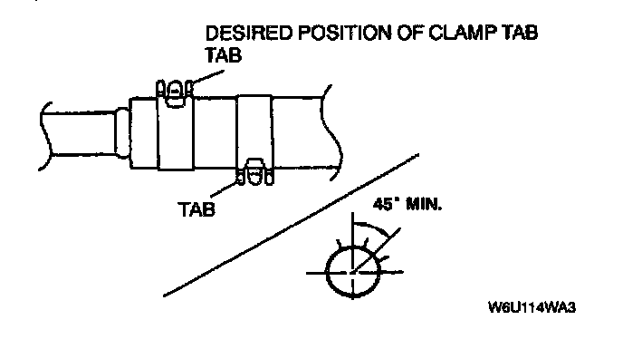

Fuel Hose Installation
WARNING: Fuel line spills and leaks are dangerous. Fuel can ignite and cause serious injuries or death and damage. When installing the fuel hose, observe "Fuel Hose Installation" and "Fuel Leakage Inspection" described below.Fuel Hose Installation
1. Replace damaged or deformed fuel hoses, fuel pipes, and hose clamps.

2. When installing the fuel hose onto the fuel pipe, fit the hose onto the pipe over 25 mm (1.00 in). When the pipe has a stopper, fit the hose until it contacts the stopper.

3. Install a hose clamp over the fuel hose within the clamp installation range as shown, avoiding the original clamp position.

4. When installing two clamps, their tabs must be positioned more than 45°(desired 180°) apart.